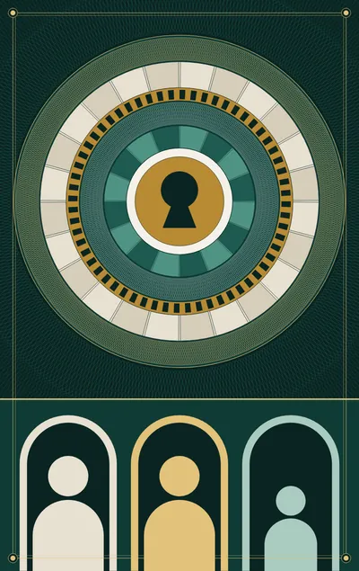

A cég, amely Ön nélkül is megáll
Három vagy öt év alatt felépítjük azt a működést, amelyben a vállalkozása a tulajdonos nélkül is fut, skálázható, és megőrzi az értékét. A végén Ön dönt: eladja, felkészített menedzsmentnek adja át, vagy a családban viszi tovább.

Kiemelt elemzésExit Körkép 2026. A családi cégvezetők 78 százaléka tíz éven belül vezetőváltásra számít, de csak 23 százalékuk kezdte el megvalósítani a tervét (Deloitte Private, 2026). Mit mondanak a kutatások a magyar generációváltásról?
Elolvasom az összefoglalótA garázstól a világvállalatig
Minden cég ugyanazokon a szakaszokon megy át, és minden szakaszban mást kér az alapítójától. A kutatók ezt negyven éve leírták. Görgessen, és nézze meg, hol tart ma az Ön cége.
A garázs: Ön a cég
Ön ad el, Ön gyárt, Ön számláz. Nincs rendszer, mert nincs rá szükség: minden az Ön fejében van, és ez így hatékony. Ebben a szakaszban a cég legnagyobb erőforrása az alapító energiája.
Churchill és Lewis modelljében a tulajdonos ekkor maga a vállalkozás: minden fontos feladatot ő végez.
A műhely: jönnek az emberek, marad a kontroll
Vannak vevők és munkatársak, de minden döntés Önnél fut össze. A cég még az alapító kiterjesztése. Itt jön az első törés: az informális működés már nem bírja el a méretet.
Greiner ezt a vezetés válságának nevezi: az alapító kreativitása már nem elég, irányításra van szükség.
Az üzem: az elágazás
A cég stabilan nyereséges. Itt dől el a legtöbb: az alapító vagy mindent a további növekedésre tesz fel, vagy elkezd leválni a napi működésről. Mindkét úthoz szakmai vezetők kellenek, akik a saját területükön nélküle döntenek.
A kutatás szerint az alapító saját munkájának jelentősége innentől csökken, a delegálás képességéé pedig nő. Ez az a szakasz, ahol egy cég a legkönnyebben az alapítóján ragad.
A cégcsoport: rendszerek nélkül megáll a növekedés
Több telephely, több piac, több vezető. A kérdés már nem az, hogy az alapító mit tud megcsinálni, hanem az, hogy mit tud átadni. Ha a döntések továbbra is egy asztalon mennek át, az alapító ideje lesz a plafon.
Greiner szerint a delegálást a kontroll válsága követi, amelyet csak rendszerek oldanak fel: terv, riport, testületek.
A világvállalat: a kulcskő a helyén
A cég intézmény. A tulajdonos és a vállalkozás pénzügyileg és működésében is elvált egymástól: a tulajdonos dönthet úgy, hogy marad, átad vagy elad.
Nem minden cégnek kell világvállalattá válnia. A kérdés nem a méret, hanem az, hogy a cég melyik szakaszban ragadt az alapítóján, és ez mennyibe kerül.
Források: Churchill, N. C. és Lewis, V. L. (1983): The five stages of small business growth. Harvard Business Review. Greiner, L. E. (1972, 1998): Evolution and revolution as organizations grow. Harvard Business Review.
Ha holnap fél évre elutazna, menne a cég Ön nélkül?
Ez a kérdés sokat elmond arról, mennyit ér ma a vállalkozása, és mennyit érhetne. Egy vevő azért fizet, ami a tulajdonos nélkül is működik, és egy utód is csak olyan céget tud átvenni, amely nem egy ember vállán áll.
Miért boltív?
Épülés közben a boltívet állvány tartja. Amikor a kulcskő a helyére kerül, az állvány lebontható, és az ív magától megáll.
Ugyanezt tesszük egy céggel: három vagy öt évig mi vagyunk az állvány. A cél az, hogy a végén ne legyen ránk szükség.
Így épül fel a program


Melyik mondat az Öné?
A tulajdonosok ritkán azzal keresnek meg minket, hogy exitre készülnek. Inkább egy mondattal. Válassza ki a sajátját.
A magyar tulajdonosok többségének nincs kész terve
Az exitről sok a legenda és kevés a mérés. A programot magyar felmérésekre, lektorált nemzetközi kutatásokra, jogszabályokra és valós esetekre építettük.
rendelkezik hivatalos utódlási tervvel
EY Vállalkozói Barométer, 2026egyáltalán nem rendelkezik utódlási tervvel
EY Vállalkozói Barométer, 2026az exitek ekkora része nem tervezett esemény miatt történik egy amerikai felmérés szerint
Exit Planning Institute, 2023az átlagos felvásárlási diszkont a nem tőzsdei cégeknél
Officer, Journal of Financial Economics, 2007Mit olvasunk ki belőle
A család marad az első gondolat, de az eladás is komoly lehetőség a tulajdonosok fejében. A két felmérés más mintán, más kérdéssel készült, ezért nem trendet mutat, hanem azt, hogy nincs egyetlen magyar válasz.
Ezért nem egy kimenetre készítünk fel, hanem mindhármat nyitva tartjuk.
Módszertan és forrásokHonnan jön az érték? Két forrásból
Egy cég értékét az eredmény és a szorzó együtt adja. A program mindkettőt mozgatja: az eredményt a jobb működés, a szorzót a kisebb kockázat.
- Magasabb eredmény: költségek, árazás, kontrolling, skálázás.
- Magasabb szorzó: kisebb tulajdonosi függés, dokumentált működés, diverzifikált bevétel.
(240 M Ft × 4)Magasabb eredmény
(+228 M Ft × 4)Magasabb szorzó
(468 M Ft × 1,5)Érték az 5. év végén
(468 M Ft × 5,5)
A számok feltételezések, nem piaci adatok és nem ígéretek. A tényleges szorzó iparágtól, piaci helyzettől és a cégtől függ.
Szabadság
Visszakapja a naptárát. A napi döntéseket a menedzsment hozza.
Több eredmény
A javuló árazás és kontrolling minden évben Önt gazdagítja, nem csak az eladás napján.
Skálázás
A növekedés már nem az Ön idején múlik.
Biztonság
Ha Önnel bármi történik, a cég és a család nem marad magára.
Családi béke
Szerepek, osztalék, utódlás: írásban.
A felkészítés akkor is megéri, ha soha nem ad el. Öt dolog, amelyet a cég megtartása mellett is megkap
Öt év, öt kapu
Ha a mérföldkő nem teljesül, a következő szakasz nem indul el. Így Ön ellenőrizhető eredményekért fizet, nem ígéretekért.

Leválik az alapító
A tulajdonos két hétre kiléphet, és a cég működik.
Tiszta számok
Könyvvizsgált beszámoló, tisztított eredmény, rendezett tulajdonosi szerkezet.
Önjáró, skálázható cég
A napi irányítást a menedzsment viszi, a növekedés már nem a tulajdonos idején múlik.
A döntés
Aláírt tulajdonosi döntés a három út egyikéről, valós számok alapján.
Az átmenet
Lezárt tranzakció, vagy a menedzsment első teljes éve terv szerint.
Az exit nem azonos az eladással
Egy felkészített cégnek több jó kimenete van. A tulajdonos a program végén, valós számok alapján dönt, nem kényszerből.
Értékesítés
Pénzzé tenné a céget, és van vevői érdeklődés a szektorban? Erős tárgyalási pozícióból, több ajánlat közül választhat.
Mikor jó ez az út →Átadás menedzsmentnek
Tulajdonos maradna és osztalékot venne ki, de a napi működésből kiszállna? A tulajdon marad, az idejét visszakapja.
Mikor jó ez az út →Családi utódlás
Van alkalmas és motivált utód a családban? Felkészült utóddal és írásban rendezett családi viszonyokkal.
Mikor jó ez az út →
Család és kontroll, angolszász módszerrel
A trust alapgondolata egyszerű: a tulajdon és a haszon szétválik, a szabályok pedig előre írásba kerülnek. Magyarországon 2014 óta alkalmazható.
Két célra ajánljuk, és csak erre a kettőre: a családi utódlás rendezésére és a vagyon feletti kontroll megtartására. Adótervezésre nem: a 2026-ban szigorított szabályok után az értéke az irányításban és az öröklés rendezésében van.
Hogyan működikNem egy tranzakciót készítünk elő, hanem egy céget
| M&A tanácsadó | Ügyvéd, adótanácsadó | Szervezetfejlesztő | Keybridge Exit Partners | |
|---|---|---|---|---|
| Mikor lép be | Amikor már van eladási szándék | Egy konkrét szerződésnél vagy adókérdésnél | Amikor a szervezet elakad | 3 vagy 5 évvel az exit előtt |
| Mire figyel | A tranzakcióra | A jogi és adózási kockázatra | A vezetésre és a működésre | A cégre, a tulajdonosra és a családra együtt |
| Mi a siker mércéje | Lezárt ügylet | Rendben lévő dokumentumok | Jobban működő szervezet | A cég önjáró, és a tulajdonos szabadon dönt |
| Marad-e a zárás után | Jellemzően nem | Eseti alapon | Általában nem | Igen, a tulajdonosi tanácsban, ha kéri |
Jellemző felállás a piacon, nem minősítés. Ezekkel a szakértőkkel együtt dolgozunk, nem helyettük.
Mérföldkőhöz kötött díj
A következő szakasz csak akkor indul, ha az előző teljesült.
Eredményhez kötött rész
A díjunk egy része igazolt eredményhez kötődik, nem az eltöltött időhöz.
Éves felülvizsgálat
Évente újramérjük a céget, és közösen döntünk a következő év céljairól.
Egy felelős
Minden szakértőt mi választunk és koordinálunk, Önnek egy kapcsolattartója van.
Amit a cégeladásról kevesen tudnak
Hat tény, amelyet a legtöbb tulajdonos a tárgyalóasztalnál hall először. Jobb előtte.
Útmutatók és e-bookok: olvasható és letölthető
 Kutatási összefoglalóExit Körkép 2026
Kutatási összefoglalóExit Körkép 2026Exit Körkép 2026: amit a kutatások a magyar generációváltásról mondanak
Hét megállapítás európai, amerikai és magyar felmérésekből: hány céget érint az átadás, mekkora a rés a szándék és a tett között, mit áraz ma a piac, és mit jelent mindez egy magyar középvállalat tulajdonosának.
Elolvasom vagy letöltöm → KézikönyvAz önjáró cég kézikönyve
KézikönyvAz önjáró cég kézikönyveAz önjáró cég kézikönyve: a garázstól a tulajdonosi szerepig
Miért növi ki minden cég az alapítóját, mit mond erről negyven év kutatása, és hogyan építhető fel lépésenként az a működés, amelyben a cég a tulajdonos napi jelenléte nélkül is hozza a tervet.
Elolvasom vagy letöltöm → KézikönyvCégeladás kézikönyv
KézikönyvCégeladás kézikönyvCégeladás kézikönyv tulajdonosoknak: az értékeléstől a zárásig
Hogyan számol a vevő, kik a vevők, hogyan zajlik a folyamat, mely szerződéses feltételek döntik el, mennyi pénz marad Önnél, és mit kell rendbe tenni évekkel korábban. Harmincpontos eladói ellenőrzőlistával.
Elolvasom vagy letöltöm → KézikönyvGenerációváltás kézikönyv
KézikönyvGenerációváltás kézikönyvGenerációváltás kézikönyv családi cégeknek: család, tulajdon, üzlet
A három kör modelltől a családi chartáig: miért halogatja az alapító az átadást, hogyan távoznak a vezetők, mi a négyféle átmenet, és hogyan lesz a családi egyetértésből kötelező erejű megállapodás.
Elolvasom vagy letöltöm →Hat tény röviden
A tárgyalás nem a szorzóról szól, hanem a normalizált EBITDA-ról.
Minden tisztítási tétel a szorzóval felszorozva jelenik meg a vételárban.
Miért → 75 napEgy jogvesztő határidő, amelyet eladáskor már késő pótolni.
A bejelentett részesedés a holdingos eladás adózásának kulcsa.
Mit kell tudni → 5DAz exitek fele nem tervezett esemény miatt történik.
Válás, halál, munkaképtelenség, pénzügyi nehézség, nézeteltérés. Mindegyikre lehet készülni.
Hogyan → 40 M $Ennyi earn-out múlt egyetlen ki nem kötött mondaton.
A Lazard kontra Qinetiq ügy tanulsága minden eladónak szól.
Az eset → 2026A bizalmi vagyonkezelés már nem adótervezési eszköz.
Augusztus 31. óta az értéke az irányításban és az öröklés rendezésében van.
Mi változott → 15–30%A magáncég diszkont egy része az Ön kezében van.
A méreten nem tud változtatni. A kulcsemberfüggésen és a számok tisztaságán igen.
Melyik része →Legfrissebb cikkeink
Normalizált EBITDA: a szám, amelyről a vételártárgyalás valójában szól
A vevő nem a beszámolóban szereplő eredményt szorozza fel, hanem a megtisztítottat. Öt korrekció, amely növeli vagy csökkenti a cége értékét, és a híd a vállalatértéktől a tulajdonos zsebéig.
Elolvasom →Magáncég diszkont: miért ér kevesebbet a cége egy tőzsdei társánál, és mit tehet ellene
A kutatások szerint a nem tőzsdei cégek 15 és 30 százalék közötti diszkonttal kelnek el. A diszkont egy része adottság, a másik része a tulajdonos kezében van. Megmutatjuk, melyik melyik.
Elolvasom →75 nap: a bejelentett részesedés határideje, amelyet eladáskor már késő pótolni
A holdingon keresztüli cégeladás adózása egy jogvesztő határidőn múlik, amely évekkel az eladás előtt telik le. Mit jelent a bejelentett részesedés, és miért kell a szerkezetet időben kialakítani.
Elolvasom →Akikkel egy asztalhoz ül
Amit a tulajdonosok először mondanak
Egyik ellenvetés sem téves. Ezért az első beszélgetés arról szól, ami Önnek fontos, nem a programról.
Minden gyakori kérdés„Még korai.”
A felkészülés évekig tart, és a vételárat a kilépés előtti évek számai adják. Amikor sürgős lesz, már csak az marad, ami akkor megvan.
„A gyerekem átveszi.”
Lehet, hogy így lesz. A kérdés az, hogy akarja-e, készen áll-e, és tudja-e a család többi tagja. Ha igen, ez a legszebb út, és erre is készítünk fel.
„Nem akarom eladni.”
Nem is kell. A program célja, hogy legyen választása. A végén akár meg is tarthatja a céget, csak már nem Ön viszi a napi ügyeket.
„Jól megy a cég.”
Épp ezért most érdemes. Egy jól működő céggel erős pozícióból lehet dönteni, és ilyenkor könnyebb a vezetőket is megtartani.
„Drága lesz.”
Egy fél szorzó az eredménytől függően akár több tíz vagy több száz millió forint. A díjat mérföldkövekhez kötjük, és a diagnózis után dönt arról, kell-e a program.
„Nem engedem ki az irányítást.”
Nem is kérjük egyik napról a másikra. A döntési jogkörök lépésenként kerülnek át, és a tulajdonos marad a tulajdonos. Azt dönti el, ami valóban rá tartozik.